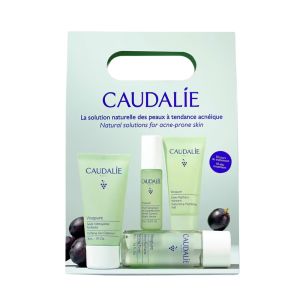

Filloni të përdorni rutinën Vinopure me kitin tonë fillestar me 4 hapa për udhëtim. Është perfekt për të provuar gamën ose për ta marrë me vete kudo që të shkoni. Lloji i lëkurës: Lëkurë e kombinuar deri në e yndyrshme Nevoja: Lëkurë e prirur ndaj akneve Përbërësit kryesorë: Acid salicilik natyral, Niacinamide, Polifenole rrushi Përdorimi: ditë-natë 1-Xhel Pastrues Pastrues 30ml Pastron, shtrëngon poret dhe zvogëlon sebumin e tepërt pa shkaktuar thatësi. 2-Tonik Pastrues 50ml Shtrëngon poret, zvogëlon njollat dhe zvogëlon dukshëm shkëlqimin. Lëkura është e pastruar, e matifikuar, e pastër dhe e kthjellët. 3-Serum Salicilik Kontrollues i Njollave 10ml Zvogëlon papërsosmëritë pa efekt pastrimi, hap dhe shtrëngon poret, dhe rafinon strukturën e lëkurës. 4-Lëng Matues Hidratues 15ml Zvogëlon njollat dhe yndyrën e tepërt. Mjaft me shkëlqim: lëkura është e hidratuar, pa shkëlqim dhe dukshëm më e shëndetshme. Rezultate të dukshme 86% panë njolla të reduktuara pas 7 ditësh* *Studim klinik, % kënaqësie, 43 vullnetarë